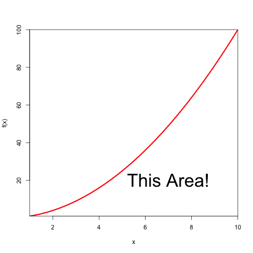
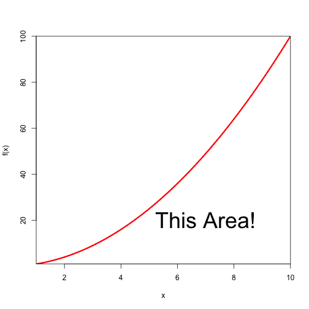

Definite Integral as Area
The definite integral of a non-negative function \(f(x)\) from \(x=a\) to \(x=b\) is the area between the \(x\)-axis and the function.
For example, the area indicated in the function below shows \(\int_{0}^{10}x^2dx\).

Jesse MB
Data Scientist
The definite integral of a non-negative function \(f(x)\) from \(x=a\) to \(x=b\) is the area between the \(x\)-axis and the function.
For example, the area indicated in the function below shows \(\int_{0}^{10}x^2dx\).

Since students understand things better when they can get their hands on the material and play with it, we've made a simple app to help visualize approximating the "area under the curve" with rectangles.

Students can choose between an increasing and a decreasing function.

Students can choose between left-hand and right-hand sums.

Students can see how, as the number of rectangles increases, the area covered by the rectangles gets closer to the desired area under the curve.